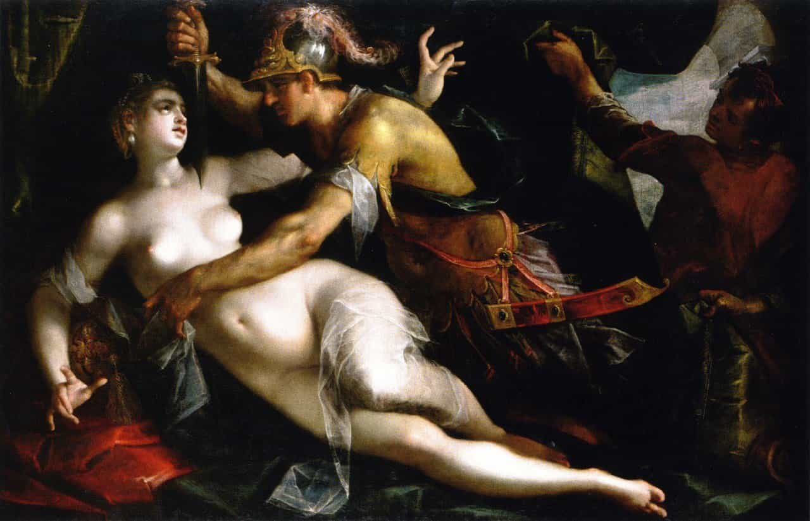

Len believes that the re-birth of tribal-minded men with the core tenants of masculinity--Strength, Courage, Mastery, and Honour--will lead to a realignment with our nature, and much more fulfilling lives.


We must ask ourselves why there is so much hysteria about rape when we live in countries, and have a culture, in which a woman’s chances of being raped stand at around 0.0060% (Australian statistics). I believe this goes deeper than just the blatant attack on men we are experiencing.
The reason these types are adamant about manufacturing stories about sexual assault and rape is because they are trying to prove they are desirable. It plays to their ego to think that there might be some testosterone-fuelled barbarian out there who would find her suitable enough for a forced session. These women want to punish men not because of a fear of being attacked, but due to a bitterness of not being approached, considered, acknowledged, and on the more extreme scale, and finally… not being a target for forced sex.

There are not many explanations that can justify the absurd irrationality of the #metoo, pussy-hat-wearing, women of the West. Any introspective types out there know that when we are confronted with something that unsettles us—that we are irrationally afraid of—we must look inward, and we must look for the truth, the foundation of that fear, however uncomfortable that may be.
I have a young sister who is in high-school and I often read her homework and/or assignments when I see her. For some reason our education systems have decided that it’s a good idea to present inflated sexual-assault figures to our young girls as truth and base a curriculum around it. I’m sure this would have to do with ensuring they are fearful and mis-trusting of men as they grow up—high-school discos are about to become a lot more awkward. The lies and fears start early.
Let’s rewind to the days of Vikings, global conquests, and crusades, where raping and pillaging were common. When these Vikings or raiders would invade, they would indiscriminately rape the women. Now, as brutal and as terrifying as it was, this helped these women indirectly fulfill their biological imperative—which is to pass on the strongest genes possible to her offspring. These genes were forced upon them by the, proven, bigger, stronger, smarter men who likely just decimated the local men of breeding age.
The women were either taken and absorbed into the tribes of the invaders where they likely had long and successful—biologically speaking—breeding lives, or they were left to the aftermath of invasion and the harsh realities of potentially raising a child with little-to-no family-support and collapsed social structures.
Fast forward back to today, these feminists and fat women (undesirables) would have been the equivalent of the low-born and peasant women of yester-year. But those ancient women would have still had exposure to top-tier men—the best genetics–whether it was consensual or not (not).
Today’s undesirables don’t have that “option,” if we can call it that. Do you think the likes of Chris Hemsworth or Brad Pitt are lining up to fuck a woman like Lena Dunham? Never in a million years. Top-tier-women of today are the only women who get exposure to the top-tier-men. Fatties and feminists cannot fulfill their biological imperatives directly (seducing a top-tier man) or indirectly (being raped by an aggressive, dominant man).
Today’s sexual marketplace is discriminate against the laziness and repulsiveness of fat women and feminists whereas the sexual marketplace of the invading hordes was indiscriminate, driven only by raging emotions and carnal urges.

Desperate for the attention of a man with options.
Acknowledging and internalising this information is no doubt far divorced from the emotional maturity of the modern feminist. But if we could boil down feminism to its few driving forces, one would surely be sexual frustration. Feminists despise the male-feminist, soy-boy-cucks who orbit them! The proof is in the lack of sexual success these men experience. So how do women find access to top-tier men?
The undesirables wish we could rewind to a time where men may have seen them as an object to be plundered but that day has long passed. I implore you all, when faced with the irrational ramblings of these undesirables, to be kind and reassuring. Look the in the eye and say, “Don’t worry, no man will ever want to rape you”.
Women need to leave feminism behind to embrace the lives that will lead them to the men they want, and therefore, the lives they want. What other call to arms can there be!? Stay in the rot, be bitter and miserable, take to the streets to march and scream, remain ignorant to the biological truths tugging at your sub-conscious, or, take responsibility for your life and build yourselves into the type of women that would command the respect of a good man.
Read More: Why Do Women Have Rape Fantasies?